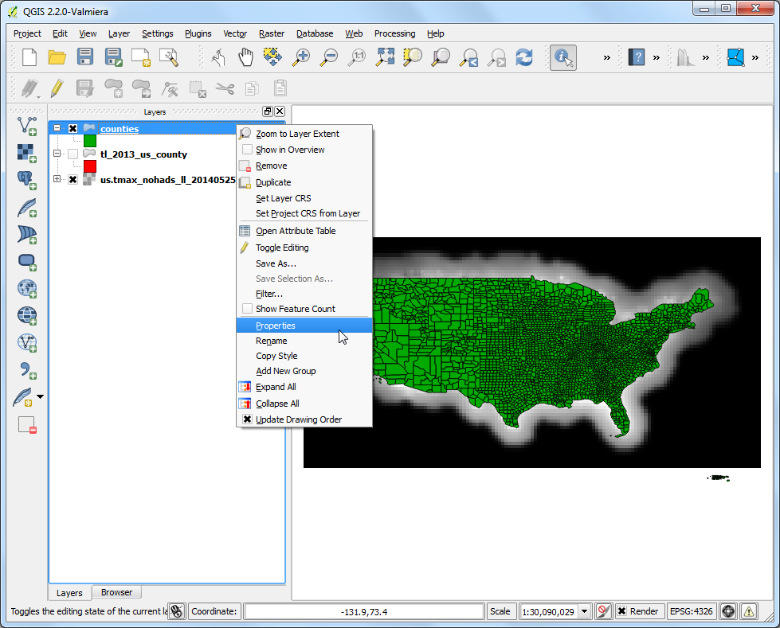

Δειγματοληψία Raster Δεδομένων με χρήση Σημείων ή Πολυγώνων.
[ Download PDF
A4
Letter ]
Πολλά επιστημονικά και περιβαλλοντικά σύνολα δεδομένων έρχονται ως gridded rasters. Δεδομένα εδάφους (DEM) διανέμονται επίσης ως αρχεία raster. Σε αυτά τα raster αρχεία, η παράμετρος που εκπροσωπείται κωδικοποιείται ως τις τιμές του pixel του raster. Συχνά, κάποιος πρέπει να εξάγει τις τιμές pixel σε συγκεκριμένες θέσεις ή να τις αθροίσει σε κάποια περιοχή. Αυτή η λειτουργία είναι διαθέσιμη στο QGIS μέσω δύο plugins - Point Sampling Tool και Zonal Statistics plugin.
Επισκόπηση του έργου.
Λαμβάνοντας υπόψη ένα πλέγμα raster των μέγιστων θερμοκρασιών στις ΗΠΑ, χρειάζεται να εξάγουμε τη θερμοκρασία σε όλες τις αστικές περιοχές και να υπολογίσουμε τη μέση θερμοκρασία για κάθε μια πολιτεία στις ΗΠΑ.
Άλλες δεξιότητες που θα μάθετε.
Διαδικασία
Πηγαίνετε στο και περιηγηθείτε στο αρχείο λήψης us.tmax_nohads_ll_{YYYYMMDD}_float.tif και κάντε κλικ στο Open.

Μόλις φορτωθεί το επίπεδο, επιλέξτε το εργαλείο Identify και κάντε κλικ οπουδήποτε στο επίπεδο. Θα δείτε την τιμή της θερμοκρασίας σε βαθμούς Κελσίου ή Band 1 σε αυτήν την θέση.

Τώρα αποσυμπιέστε το αρχείο λήψης 2013_Gaz_ua_national.zip και εξάγετε το αρχείο 2013_Gaz_ua_national.txt στο δίσκο σας. Πηγαίνετε στο .

Στο παράθυρο διαλόγου Create a Layer from Delimited Text File, κάντε κλικ στο Browse και ανοίξτε το 2013_Gaz_ua_national.txt. Επιλέξτε το Tab κάτω από το Custom delimiters. Οι συντεταγμένες του σημείου είναι σε γεωγραφικό μήκος και πλάτος, έτσι επιλέξτε INTPTLONG ως X field και INTPTLAT ως Y field. Επιλέξτε το κουτί Use spatial index και κάντε κλικ στο OK.

Τώρα είμαστε έτοιμοι να εξάγουμε τις τιμές των θερμοκρασιών από το επίπεδο raster. Εγκαταστήστε το plugin Point Sampling Tool. Δείτε το Χρησιμοποιώντας Πρόσθετες Λειτουργίες για λεπτομέρειες σχετικά με το πως να εγκαταστήσετε plugins.

Ανοίξτε το παράθυρο διαλόγου plugin από το .

Στο παράθυρο διαλόγου Point Sampling Tool, επιλέξτε 2013_Gaz_ua_national ως Layer containing sampling points. Πρέπει να παραλάβουμε ρητά τα πεδία από το επίπεδο εισόδου που επιθυμούμε στο επίπεδο εξόδου. Επιλέξτε τα πεδία GEOID και NAME από το επίπεδο 2013_Gaz_ua_national. Μπορούμε να δοκιμάσουμε τιμές από πολλαπλά raster band μια φορά, αλλά επειδή η raster band έχει μόνο 1, επιλέξτε το us.tmax_nohads_ll_{YYYYMMDD}_float: Band 1. Ονομάστε το επίπεδο διανύσματος εξόδου ως max_temparature_at_urban_locations.shp. Κάντε κλικ στο OK για να ξεκινήσει η διαδικασία δειγματοληψίας. Κάντε κλικ στο Close μόλις η διαδικασία τελειώσει.

Θα δείτε ένα νέο επίπεδο max_temparature_at_urban_locations να έχει φορτωθεί στο QGIS. Χρησιμοποιήστε το εργαλείο Identify για να κάνετε κλικ σε οποιοδήποτε σημείο για να δείτε τα χαρακτηριστικά του. Θα δείτε το πεδίο us.tmax_no - το οποίο περιλαμβάνει την τιμή του raster pixel στην τοποθεσία του σημείου.

Το πρώτο μέρος της ανάλυσης μας τελείωσε. Ας αφαιρέσουμε τα περιττά επίπεδα. Κρατήστε το Shift πλήκτρο και επιλέξτε τα επίπεδα max_temparature_at_urban_locations και 2013_Gaz_ua_national. Κάντε δεξί-κλικ και επιλέξτε Remove για να τα αφαιρέσετε από το QGIS TOC.

Πηγαίνετε στο . Περιηγηθείτε στο αρχείο λήψης tl_2013_us_county.zip και κάντε κλικ στο Open. Επιλέξτε το tl_2013_us_county.shp ως επίπεδο και κάντε κλικ στο OK.

Το tl_2013_us_county θα προστεθεί στο QGIS. Αυτό το επίπεδο είναι μέσα στην προβολή EPSG:4269 NAD83. Αυτό δεν ταιριάζει με την προβολή του raster επιπέδου. Θα επανασχεδιάσουμε αυτό το επίπεδο στην προβολή EPSG:4326 WGS84.

Κάντε δεξί-κλικ στο επίπεδο tl_2013_us_county και επιλέξτε Save As...

Στο παράθυρο διαλόγου Save Vector layer as.., κάντε κλικ στο Browse και ονομάστε το αρχείο εξόδου ως counties.shp. Επιλέξτε Selected CRS από το αναδυόμενο μενού CRS. Κάντε κλικ στο Browse και επιλέξτε WGS 84 ως το CRS. Επιλέξτε το Add saved file to map και κάντε κλικ στο OK.

Ένα νέο επίπεδο με όνομα counties θα προστεθεί στο QGIS.

Ενεργοποιήστε το Zonal Statistics Plugins. Αυτό είναι ένα βασικό plugin έτσι είναι είναι ήδη εγκατεστημένο. Δείτε το Χρησιμοποιώντας Πρόσθετες Λειτουργίες έτσι ώστε να γνωρίζεται πως να ενεργοποιήσετε βασικά plugins.

Πηγαίνετε στο .

Επιλέξτε us.tmax_nohads_ll_{YYYYMMDD}_float στο Raster layer και counties στο guilabel:Polygon layer containing the zones. Πληκτρολογήστε ZS_ as the Output column prefix. Κάντε κλικ στο OK.

Η ανάλυση μπορεί να πάρει κάποιο χρόνο ανάλογα στο μέγεθος του συνόλου δεδομένων.

Μόλις η διαδικασία τελειώσει, επιλέξτε το επίπεδο counties. Χρησιμοποιήστε το εργαλείο Identify και κάντε κλικ σε οποιοδήποτε πολύγωνο πολιτείας. Θα δείτε τρία νέα χαρακτηριστικά που προστίθενται στο επίπεδο: ZS_count, ZS_mean και ZS_sum. Αυτά τα χαρακτηριστικά περιλαμβάνουν την καταμέτρηση των raster pixels, τη μέση τιμή των raster pixel και το άθροισμα των τιμών των raster pixel αντίστοιχα. Δεδομένου ότι μας ενδιαφέρει η μέση θερμοκρασία, το πεδίο ZS_mean θα είναι αυτό που θα χρησιμοποιήσουμε.

Ας διαμορφώσουμε αυτό το επίπεδο για να δημιουργήσουμε ένα χάρτη θερμοκρασιών. Κάντε δεξί-κλικ στο επίπεδο counties και επιλέξτε Properties.

Αλλάξτε στη καρτέλα Style. Επιλέξτε Graduated style και επιλέξτε ZS_mean ως Column. Διαλέξτε ένα Color Ramp και Mode της επιλογής σας. Κάντε κλικ στο Classify για να δημιουργήσετε κλάσεις. Κάντε κλικ στο OK. (Δείτε το Βασική διανυσματική διαμόρφωση για περισσότερες λεπτομέρειες στο styling.)

Θα δείτε τα πολύγωνα πολιτειών να έχουν διαμορφωθεί χρησιμοποιώντας το μέγιστο μέσο όρο θερμοκρασιών που εξάγεται από το πλέγμα του raster.